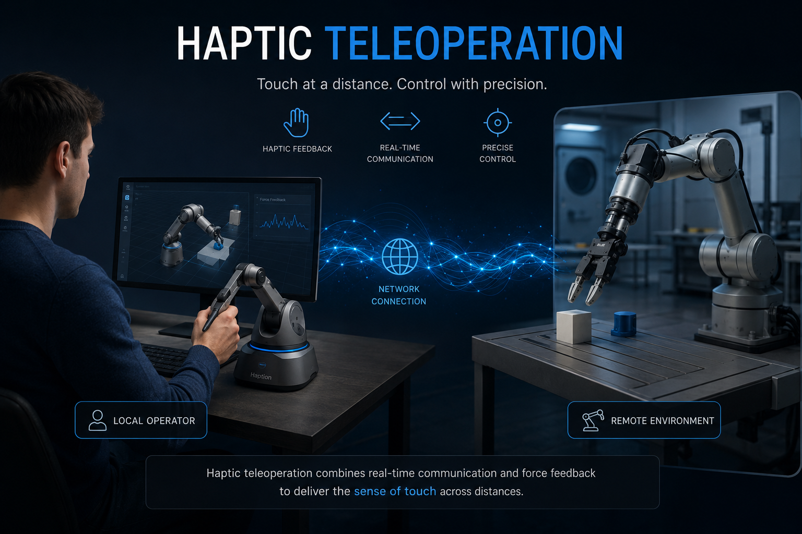

Hover to playHaptic Teleoperation and Learning from Demonstration with the Franka Robotic Arm
A research project exploring real-time robotic control using haptic devices and trajectory learning via Gaussian Mixture Models.
Introduction
Remote control
Real-time control of a robot using a haptic device allows humans to perform precise tasks in remote or hazardous environments, such as surgery or search and rescue.
Learning from demonstration
Robots can learn complex manipulation tasks from human demonstrations, enabling them to generalize trajectories to new, dynamic situations without manual programming.
Remote control

System architecture
The system connects two PCs via ROS. PC1 handles the Falcon haptic device, while PC2 runs the control node that talks to the Franka Panda over TCP/IP.
Control & feedback
We implemented Cartesian Impedance Control for both position and orientation. Orientation error is handled via quaternion-based calculations.
Force feedback
Instead of a dedicated sensor, we estimate the external wrench from the robot’s internal state. A threshold filter reduces noise before the feedback is sent to the haptic device.
Workspace & gripper
Clutch strategy: holding a button enables motion, so the small Falcon workspace can be mapped onto the much larger robot workspace.
Gripper: managed via franka_gripper, with button mappings for open, close and grasp.

LFcommand
OFcommand
FLfeedbackLearning from demonstration

GMM & GMR
We model the joint distribution P(x, v) with Gaussian Mixture Models. Trajectories are reproduced with Gaussian Mixture Regression, conditioning on the current position.

Task-Parameterized GMM
TP-GMM generalizes demonstrations across reference frames (task parameters), improving extrapolation when the environment changes.
Videos
Teleoperation result
Grasping objects with position and orientation control.
Results overview
Summary of remote control and learning outcomes.